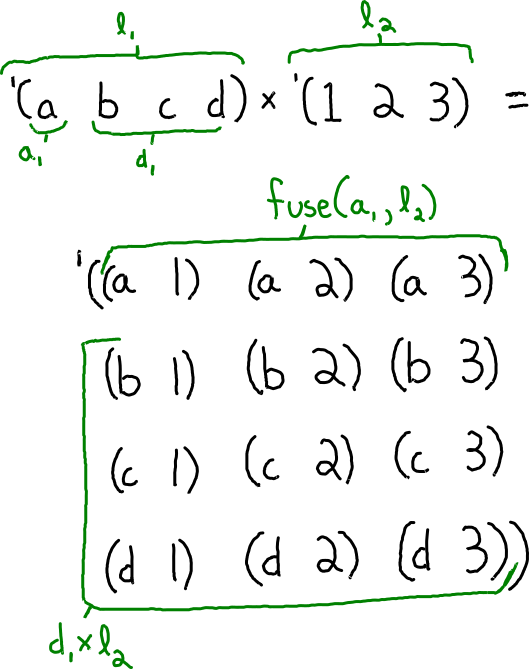

Lists in miniKanren follow the tradition of recursively-defined linked lists
from functional and logic programming. Often this document will follow a
convention of using a and d as logic variables to
describe the head and tail of a non-empty list. This is in the tradition of the
host language functions car and cdr.
Here is proper-listo from The Reasoned Schemer, 2nd edition:
|#
(defrel (proper-listo l)
(conde
((== l '()))
((fresh (a d)
(== l `(,a . ,d))
(proper-listo d)))))
#|
There are certain miniKanren relations which describe types and data structures. The relations should not be used directly, because they they can ground variables too soon. Instead, use these as a pattern match for each clause.
This technique is related to the following logical rule:
((p ∧ a) ∨ (¬p ∧ b)) ∧ ((p ∧ x) ∨ (¬p ∧ y)) ----------------------- ( p ∧ a ∧ x) ∨ (¬p ∧ b ∧ y)
A relation for detecting if a list is odd or even length is sometimes useful, especially if you can ground the length's parity (describing an infinite set of lists) before you commit to an a particular length.
|#
(defrel (length-parityo l p)
(conde
((== l '()) (== p 'even))
((fresh (a d rec)
(== l `(,a . ,d))
(conde
((== p 'odd) (== rec 'even))
((== p 'even) (== rec 'odd)))
(length-parityo d rec)))))
#|
appendo
The classic relation over lists is appendo, which constrains three
lists, l, r, and l++r such that
l++r is the concatenation of l and r.
|#
(defrel (appendo l r l++r)
(conde
((== l '()) (== l++r r))
((fresh (a d d++r)
(== l `(,a . ,d))
(== l++r `(,a . ,d++r))
(appendo d r d++r)))))
#|
For an introduction to appendo, watch this clip at 34:12 of Will
Byrd presenting a tutorial at the 2023 miniKanren workshop:
https://youtu.be/e_yc9YaLNDE?t=2052.
There are many things to appreciate about this relation. As Will mentions, it
is very similar to a recursive definition of the append function over
cons lists from functional programming, and the relational definition of
appendo can be derived from regular transformations over the
functional definition of append.
Another interesting property of this relation is that when l++r is
known, then all possible values for l and r can be
enumerated with run*. Being able to "run backwards" using
run* can be difficult to achieve.
Look what happens when all arguments remain fresh:
> (run 5 (l r l++r) (appendo l r l++r)) ((() _0 _0) ((_0) _1 (_0 . _1)) ((_0 _1) _2 (_0 _1 . _2)) ((_0 _1 _2) _3 (_0 _1 _2 . _3)) ((_0 _1 _2 _3) _4 (_0 _1 _2 _3 . _4)))
What we see here are the first 5 elements of an infinite enumeration of
triples. Each successive result has l length instantiated to the
next length, while r remains fresh, and l++r is
constrained to being a list which has l as a prefix and
r as a tail, exactly the definition of appending. The fact that
l is length-instantiated and r remains fresh is a
consequence of using cons lists. It is not easy to create an append relation
which length-instantiates r and leaves l fresh due to
the representation of lists in the host language.
These two facts: that appendo length-instantiates l,
and that r remains fresh when l++r is fresh, can be
determined statically; they can be known just by looking at the code.
Within the appendo relation, there is actually a definition of
proper-listo: l is either the empty list, or it is
the pair `(,a . ,d) with the recursive promise that d
is itself a proper list. It is easier to see the fact about r. The
only time r is mentioned in the appendo code is when
it is unified with l++r.
This static analysis of miniKanren relations is a promising area of research. It would be very useful, say, in an IDE, to automatically know some of the consequences of calling a relation on certain arguments.
One other thing to note is that even though r is free, it really
represents a proper list, even though a call to something like
(appendo '(a b c) 'foo '(a b c . foo)) will succeed. In miniKanren
implementations embedded in Scheme, like TRS2e miniKanren and
faster-miniKanren, the programmer is responsible for maintaining this type
constraint. But there are implementations that can enforce this constraint at
compile-time, like
typedKanren.
One final observation: This appendo definition benefits from the
ability to write variable names in Scheme which can contain special symbols.
Here we rely on convention to help show that l++r is the result of
appending l to r, and similarly that
d++r is the result of appending d to r.
It can be annoying to have to name all the intermediate results in logic
programming, but at least we can take advantage of Scheme's flexible variable
naming to hint at the relationships between logic variables--it becomes clear
that there must be a call to (appendo d r d++r) somewhere in the
relation definition.
Peano numerals are represented as a list of repetitions of the symbol
s. For example, three is '(s s s), five is
'(s s s s s), and zero is the empty list, '().
|#
(defrel (peanoo n)
(conde
((== n '()))
((fresh (n-1)
(== n `(s . ,n-1))
(peanoo n-1)))))
#|
There is a little-endian binary representation of natural numerals hereafter known as Oleg numerals. Below is the analogous "grounding" relation.
|#
(defrel (olego n)
(conde
((== n '()))
((fresh (a d)
(== n `(,a . ,d))
(conde
((== a 0) (poso d))
((== a 1)))
(olego d)))))
#|
See
Pure, Declarative, and Constructive Arithmetic Relations by Kiselyov, et al.
for further details.
Here's an idea on how to represent sets of natural numbers in miniKanren.
I want to start with the simplest thing I can think of: testing a subset of the naturals for membership. I'm still thinking about how to implement testing for non-membership.
If you were to ask me which subset of the naturals contains 4, and 0, and 3, I'd say {0 ... 3, 4, ... }.

|#
(defrel (elemo n s)
(fresh (l m r)
(== s `(,l ,m ,r))
(conde
((== n '()) (== m #t))
((fresh (a d rec)
(== n `(,a . ,d))
(conde
((== a 0) (poso d) (== rec l))
((== a 1) (== rec r)))
(elemo d rec))))))
#|
> (run* (q) (elemo '(0 0 1) q)
(elemo '() q)
(elemo '(1 1) q))
'((((_.0 _.1 (_.2 #t _.3)) _.4 _.5) #t (_.6 _.7 (_.8 #t _.9))))
Raffi Sanna helped me figure out the code for its complement:
(defrel (not-elemo n s)
(fresh (l r)
(conde
((== s '()))
((== n '()) (== s `(,l #f ,r)))
((fresh (val b rec)
(== s `(,val ,l ,r))
(conde
((== n `(0 . ,b)) (poso b) (== rec l))
((== n `(1 . ,b)) (== rec r)))
(not-elemo b rec))))))
|#
(defrel (even-odd-helpero n diff)
(conde
[(== n '()) (== diff 0)]
[(== n '(1)) (== diff 2)]
[(== n '(0 1)) (== diff 1)]
[(== n '(1 1)) (== diff 0)]
[(fresh (a ad dd new-diff)
(== n `(,a ,ad . ,dd))
(poso dd)
(conde
[(== a ad) (== diff new-diff)]
[(== `(,a ,ad) '(0 1)) (+1mod3o new-diff diff)]
[(== `(,a ,ad) '(1 0)) (+1mod3o diff new-diff)])
(even-odd-helpero dd new-diff))]))
(defrel (div3o/even-odd n)
(even-odd-helpero n 0))
(defrel (+1mod3o n n+1)
(conde
[(== n 0) (== n+1 1)]
[(== n 1) (== n+1 2)]
[(== n 2) (== n+1 0)]))
#|
> (run 30 (q) (div3o/even-odd q)) ((()) ((1 1)) ((_0 _0 1 1)) ((_0 _0 _1 _1 1 1)) ((0 1 1)) ((1 0 0 1)) ((_0 _0 _1 _1 _2 _2 1 1)) ((0 1 _0 _0 1)) ((_0 _0 0 1 1)) ((1 0 _0 _0 0 1)) ((_0 _0 1 0 0 1)) ((_0 _0 _1 _1 _2 _2 _3 _3 1 1)) ((0 1 _0 _0 _1 _1 1)) ((_0 _0 0 1 _1 _1 1)) ((1 0 _0 _0 _1 _1 0 1)) ((_0 _0 _1 _1 0 1 1)) ((0 1 0 1 0 1)) ((_0 _0 1 0 _1 _1 0 1)) ((1 0 0 1 1 1)) ((_0 _0 _1 _1 1 0 0 1)) ((0 1 1 0 1 1)) ((1 0 1 0 1)) ((_0 _0 _1 _1 _2 _2 _3 _3 _4 _4 1 1)) ((0 1 _0 _0 _1 _1 _2 _2 1)) ((_0 _0 0 1 _1 _1 _2 _2 1)) ((1 0 _0 _0 _1 _1 _2 _2 0 1)) ((_0 _0 _1 _1 0 1 _2 _2 1)) ((0 1 0 1 _0 _0 0 1)) ((_0 _0 1 0 _1 _1 _2 _2 0 1)) ((1 0 0 1 _0 _0 1 1)))
Consider the way a dealer shuffles cards like in the below GIF. Two separate decks get combined into one larger deck.

In miniKanren, this would be a relationship between a list l1, a
list l2, and their riffled output l1Ul2. Here, the
U in l1Ul2 is meant to look like multiset union.
We will write the miniKanren code as if it is checking to make sure the riffled
output is correct and follows logically from the inputs. First, let's check the
easy case: if one of l1 or l2 is empty, then the
riffled output is just the other list.
(defrel (riffleo l1 l2 l1Ul2)
(conde
;; If one of l1 or l2 is empty, then the riffled output is is equal to the
;; other list.
((== l1 '()) (== l1Ul2 l2))
((== l2 '()) (== l1Ul2 l1))
;; TODO: When both `a` and `b` are non-empty
))
These cases are overlapping when both a and b are empty. It is good practice to
"expand out" the overlapping cases. So there should be three base cases: when
only l is empty, when only r is empty, and when they
are both empty.
As usual, we must positively express non-emptiness by asserting the existence of a head and tail for the nonempty list.
(defrel (riffleo l1 l2 l1Ul2)
(fresh (a1 d1 a2 d2)
(conde
;; If l1 and l2 are both empty, then the output is empty.
((== l1 '()) (== l2 '()) (== l1Ul2 '()))
;; If l1 is nonempty and l2 is empty, then the output is l1.
((== l1 `(,a1 . ,d1)) (== l2 '()) (== l1Ul2 l1))
;; If l1 is empty and l2 is nonempty, then the output is l2.
((== l1 '()) (== l2 `(,a2 . ,d2)) (== l1Ul2 l2))
;; TODO: when both l1 and l2 are nonempty
)))
The recursive case is when both l1 and l2 are
nonempty, meaning they both contain a head (a1 and
a2, respectively) and a tail (d1 and
d2). In the above GIF, either a left card falls into the output
deck, or the right card does. Either way, the riffle shuffle continues. So we
have two nonempty cases: either a1 sits at the top of the deck
(meaning the rest of the deck is the result of riffling d1 with
the intact l2), or vice versa: a2 sits at the top of
the deck and the rest is l1 riffled with d2.
|#
(defrel (riffleo/v1 l1 l2 l1Ul2)
(fresh (a1 d1 a2 d2 l1Ud2 d1Ul2)
(conde
;; If l1 and l2 are both empty, then the output is empty.
((== l1 '()) (== l2 '()) (== l1Ul2 '()))
;; If l1 is nonempty and l2 is empty, then the output is l1.
((== l1 `(,a1 . ,d1)) (== l2 '()) (== l1Ul2 l1))
;; If l1 is empty and l2 is nonempty, then the output is l2.
((== l1 '()) (== l2 `(,a2 . ,d2)) (== l1Ul2 l2))
;; When both l1 and l2 are nonempty
((== l1 `(,a1 . ,d1)) (== l2 `(,a2 . ,d2))
(conde
;; Either a1 is the first element in the riffled list
((== l1Ul2 `(,a1 . ,d1Ul2)) (riffleo/v1 d1 l2 d1Ul2))
;; Or, a2 is the first element in the riffled list
((== l1Ul2 `(,a2 . ,l1Ud2)) (riffleo/v1 l1 d2 l1Ud2)))))))
#|
The above has the suffix /v1 because, although the code is
complete, there is room for improvement.
In riffleo/v1, there are two recursive calls. By introducing fresh
variables, this recursive call can be factored out (or undistributed) from the
conde.
|#
(defrel (riffleo/v2 l1 l2 l1Ul2)
(fresh (a1 d1 a2 d2 l1Ud2 d1Ul2 x y xUy)
(conde
;; If l1 and l2 are both empty, then the output is empty.
((== l1 '()) (== l2 '()) (== l1Ul2 '()))
;; If l1 is nonempty and l2 is empty, then the output is l1.
((== l1 `(,a1 . ,d1)) (== l2 '()) (== l1Ul2 l1))
;; If l1 is empty and l2 is nonempty, then the output is l2.
((== l1 '()) (== l2 `(,a2 . ,d2)) (== l1Ul2 l2))
;; When both l1 and l2 are nonempty
((== l1 `(,a1 . ,d1)) (== l2 `(,a2 . ,d2))
(conde
;; Either a1 is the first element in the riffled list
((== l1Ul2 `(,a1 . ,d1Ul2)) (== `(,x ,y ,xUy) `(,d1 ,l2 ,d1Ul2)))
;; Or, a2 is the first element in the riffled list
((== l1Ul2 `(,a2 . ,l1Ud2)) (== `(,x ,y ,xUy) `(,l1 ,d2 ,l1Ud2))))
;; Either way, continue riffling
(riffleo/v2 x y xUy)))))
#|
Let this be the canonical implementation of riffling.
|# (defrel (riffleo l1 l2 l1Ul2) (riffleo/v2 l1 l2 l1Ul2)) #|
Here are some useful observations around "riffling", asserted without proof.
Since riffleo can be thought of as a generalization of
appendo, it has many of the same properties.
a comes before another element b in one of
the lists being riffled, then a must also come before
b in the output list. Riffling, in some sense, preserves the
internal order of both its input lists.
(riffleo a b c) produces the same solution set as
(riffleo b a c). When you riffle shuffle two decks together, does
it really matter which deck is in your left hand and which is in your right?
riffleo to solve the 3-partition problem
Consider the NP-complete
3-partition problem, where the input is a list l of 3n numbers
and the output is a list partitions of n triples, such that each
partition adds up to the same sum and each element in each triple
is contained exactly once in l. In miniKanren, this problem can be
described as a relationship between input and output as follows:
When the input list l is empty, there are no partitions.
By vacuous truth, all the partitions add up to the same sum.
When l is nonempty, then it must have at least three elements that
add up to the sum, and the rest of the elements of l
must also form a 3-partition with the same sum. Crucially, the
three elements that add up to the sum (call them e1,
e2, and e3) can be picked, or "unriffled", from
l.
|#
(defrel (3-partitiono l partitions sum)
(conde
((== l '()) (== partitions '()))
((fresh (e1 e2 e3 e1+e2 rest-l rest-partitions)
(== partitions `((,e1 ,e2 ,e3) . ,rest-partitions))
(riffleo `(,e1 ,e2 ,e3) rest-l l)
(pluso e1 e2 e1+e2)
(pluso e1+e2 e3 sum)
(3-partitiono rest-l rest-partitions sum)))))
#|
Notice how this upholds the invariant that l is of some length 3n,
since three elements are picked from l recursively until it is
empty.
Let's see how this relation fares against
this first example from Wikipedia. Of course, pluso only works
on Oleg numerals, so in order to convert the decimal inputs from the example,
build-num is used.
> (run 1 (partitions sum)
(3-partitiono
(map build-num '(20 23 25 30 49 45 27 30 30 40 22 19))
partitions
sum))
> (run 1 (partitions sum)
(3-partitiono
(map build-num '(20 23 25 30 49 45 27 30 30 40 22 19))
partitions
sum))
((( ((0 0 1 0 1) (1 0 0 1 1) (1 0 1 1 0 1))
((1 1 1 0 1) (1 1 0 1 1) (0 0 0 1 0 1))
((0 1 1 1 1) (0 1 1 1 1) (0 1 1 1 1) )
((1 0 0 0 1 1) (0 1 1 0 1) (1 1 0 0 1) ))
(0 1 0 1 1 0 1)))
Interpreting these results in decimal shows that the original list can be
partitioned into the triples (20 25 45), (23 27 40),
(30 30 30), and (49 22 19), each summing to 90.
Another NP-complete problem is 3SAT: given a list of triples, where each element in the triple represents a literal, that is, a number representing the ith variable along with a boolean representing the positive or negative version of the literal, does there exist a mapping of each variable index to a boolean such that every triple contains at least one correct assignment?
In order to encode 3SAT in miniKanren, we need a way to look up a variable's value. A trie can help here, similar to a set of Oleg numerals.
|#
(defrel (lookupo/trie map n val)
(fresh (v l r)
(== map `(,v ,l ,r))
(conde
((== n '()) (== val v))
((fresh (a d rest-map)
(== n `(,a . ,d))
(conde
((== a 0) (poso d) (== rest-map l))
((== a 1) (== rest-map r)))
(lookupo/trie rest-map d val))))))
#|
A negative form of lookupo/trie is not needed for 3SAT, because
the mapping can remain open-ended for Oleg numerals that do not appear in the
formula.
|#
(defrel (3sato dnf assignments)
(conde
((== dnf '()))
((fresh (v1 v2 v3 p1 p2 p3 v p rest-dnf)
(== dnf `((,p1 ,v1 ,p2 ,v2 ,p3 ,v3) . ,rest-dnf))
(conde
((== p1 p) (== v1 v))
((== p2 p) (== v2 v))
((== p3 p) (== v3 v)))
(lookupo/trie assignments v p)
(3sato rest-dnf assignments)))))
#|
Let's see if it can detect that the following formula is unsatisfiable.
> (run 1 (q)
(3sato '((#t () #t (1) #t (0 1))
(#t () #t (1) #f (0 1))
(#t () #f (1) #t (0 1))
(#t () #f (1) #f (0 1))
(#f () #t (1) #t (0 1))
(#f () #t (1) #f (0 1))
(#f () #f (1) #t (0 1))
(#f () #f (1) #f (0 1))) q))
()
It can! How about removing the last line? It should then be satisfiable, when
all three variables are assigned to #t.
> (run 1 (q)
(3sato '((#t () #t (1) #t (0 1))
(#t () #t (1) #f (0 1))
(#t () #f (1) #t (0 1))
(#t () #f (1) #f (0 1))
(#f () #t (1) #t (0 1))
(#f () #t (1) #f (0 1))
(#f () #f (1) #t (0 1))) q))
(((#t (_0 _1 (#t _2 _3)) (#t _4 _5))))
That works too! In fact that should be the only answer.
> (run* (q)
(3sato '((#t () #t (1) #t (0 1))
(#t () #t (1) #f (0 1))
(#t () #f (1) #t (0 1))
(#t () #f (1) #f (0 1))
(#f () #t (1) #t (0 1))
(#f () #t (1) #f (0 1))
(#f () #f (1) #t (0 1))) q))
(((#t (_0 _1 (#t _2 _3)) (#t _4 _5)))
((#t (_0 _1 (#t _2 _3)) (#t _4 _5)))
((#t (_0 _1 (#t _2 _3)) (#t _4 _5)))
((#t (_0 _1 (#t _2 _3)) (#t _4 _5)))
((#t (_0 _1 (#t _2 _3)) (#t _4 _5)))
((#t (_0 _1 (#t _2 _3)) (#t _4 _5)))
((#t (_0 _1 (#t _2 _3)) (#t _4 _5)))
((#t (_0 _1 (#t _2 _3)) (#t _4 _5)))
((#t (_0 _1 (#t _2 _3)) (#t _4 _5)))
((#t (_0 _1 (#t _2 _3)) (#t _4 _5)))
((#t (_0 _1 (#t _2 _3)) (#t _4 _5)))
((#t (_0 _1 (#t _2 _3)) (#t _4 _5)))
((#t (_0 _1 (#t _2 _3)) (#t _4 _5)))
((#t (_0 _1 (#t _2 _3)) (#t _4 _5)))
((#t (_0 _1 (#t _2 _3)) (#t _4 _5)))
((#t (_0 _1 (#t _2 _3)) (#t _4 _5)))
((#t (_0 _1 (#t _2 _3)) (#t _4 _5)))
((#t (_0 _1 (#t _2 _3)) (#t _4 _5)))
((#t (_0 _1 (#t _2 _3)) (#t _4 _5)))
((#t (_0 _1 (#t _2 _3)) (#t _4 _5)))
((#t (_0 _1 (#t _2 _3)) (#t _4 _5)))
((#t (_0 _1 (#t _2 _3)) (#t _4 _5)))
((#t (_0 _1 (#t _2 _3)) (#t _4 _5)))
((#t (_0 _1 (#t _2 _3)) (#t _4 _5))))
Each identical answer here corresponds to an "execution path" the verifier took--whether to satisfy using the first, second, or third literal for each clause.
The Cartesian product, typically defined over sets, can be written in
miniKanren over lists, similar to Python's
itertools.product. Thus we can define a relation between three lists:
two "input" lists l1 and l2, and a third list
l1*l2 denoting their Cartesian product.
We recur over the first list l1. The base case is straightforward:
When l1 is empty, then the product is empty. It is like
multiplying by zero.
The recursive case is more interesting. I always like to start by drawing a picture and annotating things that should be named in green. This helps me figure out the relationships.
 |#